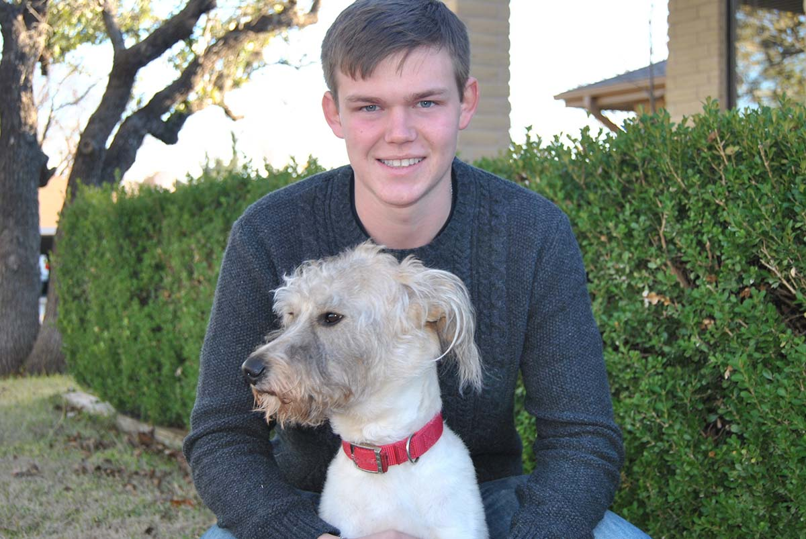

Aaron Ashton Hughes
Born 4.5.1995 – With GOD 6.13.2015
My Dear Son
There was his wounded body but he was not there.
I looked up and saw GOD, with Jesus in his right hand and Ashton in his left, and the Holy Spirit around them all.
GOD said "I am taking Ashton with us to a place where eagles soar and the damned are no more. That is where he'll be, you'll see."
GOD spoke these exact words to me in a dream. HE instructed me to wake up and write them down immediately. David Hughes, 3.15.2016, Broken Arrow Ranch (the bunkhouse)
We love you Ashton. You provided so many precious memories for us all. We miss you so much.
Thank you Crystal and family for giving Ashton so many years of your love. He loved you like his own family.
Thank you uncle Rod and family for taking Ashton into your home and providing a Godly environment for him. That was a special year in his life.
Thank you Coach Morales for your overwhelming love of Ashton for so many years. He loved you very much.
Thank you to our family and friends for your overwhelming support through this difficult time in our lives.
David, Shari, Bethany, Jayden & Abby Hughes